This software is purely research experimentation and is provided strictly "AS IS". It may damage your device, CNC machine, spindle, laser diode, workpiece, or computer. The goal of this project is the exploration of what is possible in unified in-browser digital fabrication. Users accept all risks and agree to hold authors, contributors, and developers completely harmless regardless of outcome. USE AT YOUR OWN RISK.
All comments, feedback, and discussion are encouraged and welcome in community posts.
>
All comments, feedback, and discussion are encouraged and welcome in community posts.
Community Rules:
1. Open Source & Copyleft: Keep all innovations accessible and free for everyone.
2. Constructive Community: Keep all commentary positive, helpful, and respectful.
3. Action-Oriented Collaboration: Write code to fix issues and share your solutions back to the group.
JumpStart 3D CAD + Vellum Vector Studio + Continuous Layer Extension (CLE)
Architecture, Subsystem Internals, Lifecycle, API Reference, and Tooling Manual
JSVCLE Studio is a modular digital fabrication platform combining three core runtime environments into an integrated desktop architecture:
Dev/index.htm): An in-browser Boundary Representation (B-Rep) parametric solid modeling engine built on Three.js and custom geometric kernel primitives.Vellum/index.htm): A standalone 2D parametric vector editor, SVG engine, and laser path generator running within an isolated or modal iframe context.Dev/cle_tools/): A modular suite of ES6 classes mounted directly into JumpStart's runtime lifecycle to provide CNC/laser toolpath slicing, physical machine envelope simulation, 4th axis rotary modeling, dual-mode gamepad control, hardware telemetry, and job recovery.tools/CLE_server.py): A zero-dependency Python 3 HTTP daemon listening on 127.0.0.1:8765 providing CLE Git snapshotting, controller profile persistence, and PrusaSlicer CLI execution fallback.

JSVCLE operates under a unified functional capability matrix across CAD, CAM, 2D Vector, and CNC control domains:

The JSVCLE build and development infrastructure is designed for zero friction on Windows 11 64-bit developer workstations.

build_full_tree.bat / Build-FullTree.ps1)The master build script automates a 6-stage release pipeline:

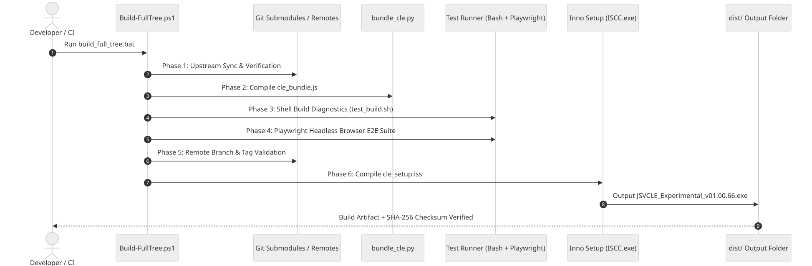

Dev/cle_tools/cle_boot.jswindow.CLE: Master instance of CLEBridge.init(): Lifecycle hook executed on DOMContentLoaded. Mounts CSS, builds UI ribbon, initializes bed visualizer, attaches keyboard hooks, and pings CLE_server.py.injectStyles(): Appends cle_theme.css styles into the JumpStart host DOM.buildTopNavigationTabs(): Appends CAD | CAM | Laser | Rotary | Slicer | Vellum workspace selector tabs to the top header.buildRibbon(): Renders contextual action bars (Connection, Jog Controls, Spoilboard, Slicer, Rotary, Vault).showVaultSaveNotice(msg): Displays animated non-blocking HUD notification.openModal(title, contentHtml) / closeModal(): Standardized modal dialog manager.Dev/cle_tools/cle_bed.jsCLEBedVisualizer(bridge)config.travelX, config.travelY, config.travelZ: Active machine envelope dimensions ($600 \times 500 \times 100\,\text{mm}$).config.spoilboardThickness: MDF slab thickness (default $20.0\,\text{mm}$).config.cutoutOvercut: Safe breakthrough allowance into spoilboard (default $0.2\,\text{mm}$).workpieceZ: Calculated top-of-spoilboard seating height ($Z = \text{thickness} + 0.1\,\text{mm} = 20.10\,\text{mm}$).bedGroup: THREE.Group containing table meshes and grid lines.cursorGroup: THREE.Group containing live spindle cone, tool tip, projected shadow reticle, and DRO billboard.mountToScene(): Hooks into JumpStart's active Three.js scene (window.app.scene or window.xe.scene).buildBedMesh(): Generates aluminum bed frame and textured MDF spoilboard.buildRulers(): Generates millimeter graduations and numeric labels along X (0 to 600mm) and Y (0 to 500mm) using canvas texture sprites.updateToolheadPosition(x, y, z, a): Moves live 3D cursor, casts vertical shadow down onto spoilboard surface, and updates floating DRO coordinate tag.placeWorkpieceOnSpoilboard(mesh): Aligns bottom bounding box of CAD solid or grayscale relief to Z = workpieceZ.Dev/cle_tools/cle_slicer.jsCLESlicerEngine(bridge)mode = 'cnc': Top-Down roughing and finishing passes ($Z_{\max} \rightarrow Z_{\min}$) down to spoilboard overcut.mode = 'laser': Top-down planar vector marking and vector rastering.mode = '3d': Bottom-up additive FDM slicing ($Z_0 \rightarrow Z_{\max}$).laminationConfig.enabled = true: Laminated slicing for biradial horns and thick slab stock. Partitions tall models into discrete slabs (e.g. $30.0\,\text{mm}$) with automated $\varnothing 8.0\,\text{mm}$ alignment dowel holes.sliceGrayscaleRelief(imageEl, options): Creates 3D continuous relief mesh from grayscale image brightness and computes carving toolpath.sliceActiveModel(): Inspects JumpStart CAD geometry, extracts planar boundary contours, computes infill hatch, and renders 3D layer visualization stack.generateLaminatedSlabs(cadMesh): Splits geometry along Z planes into separate machining jobs with registration pins.renderLayerStack(): Generates color-coded THREE.LineSegments representing rapid moves (red), feed moves (cyan), and retracts (yellow).exportGCodeToFluidNC(filename): Sends generated toolpath over HTTP to CLE_server.py or streams to FluidNC SD card.Dev/cle_tools/cle_fluidnc.jsCLEFluidNCClient(bridge)port: Active SerialPort instance.ws: Active WebSocket instance.status: Machine status string (Idle, Run, Jog, Hold, Alarm).dro: Machine coordinates { X, Y, Z, A } and work coordinates { wX, wY, wZ, wA }.connectSerial(baudRate = 115200): Requests WebSerial USB device and opens reader/writer streams.connectWebSocket(ipAddress): Connects to FluidNC WebSocket stream on port 81 or 8080.send(gcodeLine): Queues and transmits G-code command string.jog(axis, distance, feedRate): Sends real-time jog string $J=G91 G21 {axis}{distance} F{feedRate}.feedHold(): Sends immediate ! character.resumeJob(): Sends immediate ~ character.emergencyReset(): Sends immediate Ctrl+X (\x18) character.pollStatus(): Sends ? query every $100\,\text{ms}$ to parse Dev/cle_tools/cle_gamepad.jsCLEGamepadEngine(bridge)Mode 0: Design CAD Mode: Left stick orbits CAD camera; right stick pans; triggers zoom in/out.Mode 1: CNC Machine Jog Mode: Left stick jogs X/Y axes; right stick jogs Z axis; bumpers jog A rotary axis.poll(): High-frequency loop synchronized to requestAnimationFrame.applyDeadband(value, threshold = 0.12): Filters joystick analog drift.calculateJogRate(axisDeflection): Applies quadratic acceleration curve for precise micro-stepping on soft deflections and high-speed transit on full deflections.openRemapModal(): Opens visual remap interface for button and axis reassignment.Dev/cle_tools/cle_rotary.jsCLERotaryEngine(bridge)chuckDiameter: Visual 3-jaw chuck diameter (default $80\,\text{mm}$ or $100\,\text{mm}$).stockLength, stockDiameter: Visual cylinder stock dimensions.rotaryGroup: THREE.Group attached to machine bed.mountToBed(): Positions rotary chuck along the left edge of the spoilboard ($X=50\,\text{mm}, Y=250\,\text{mm}, Z=60\,\text{mm}$).updateAngle(deg): Continuously rotates chuck, jaws, and stock cylinder in 3D viewport.clampWorkpiece(length, diameter): Adjusts 3D stock cylinder dimensions and centers on lathe axis.Dev/cle_tools/cle_vault.jstools/CLE_server.py to provide version control and profile persistence.CLEVault(bridge)saveProject(projectName, cadStateJson, comment): Posts project bundle to /api/vault/save. Triggers automatic Git commit in vault/projects/{name}/.getProjectHistory(projectName): Fetches commit hash, author, timestamp, and message log.checkoutProjectVersion(projectName, commitHash): Restores exact historical project state.saveControllerProfile(profileName, mapping): Saves gamepad mapping to vault/profiles/.saveMachineProfile(machineId, config): Saves machine envelope, limits, and bed offsets to vault/machines/.Dev/cle_tools/cle_vellum.jsCLEVellumBridge(bridge)modalEl: Fullscreen overlay container.iframeEl: Embedded iframe hosting Vellum/index.htm.openVellum() / closeVellum(): Toggles fullscreen Vellum workspace overlay.initMessageListener(): Listens for window.addEventListener('message') events containing CLE_VELLUM_EXPORT.handleExport(payload): Receives vector data from Vellum:tools/CLE_server.py127.0.0.1:8765. Standard library only (http.server, subprocess, json, pathlib).GitVaultEngine: Automates git init, git add, git commit, git log, and git checkout inside vault/projects/{name}/.PrusaSlicerEngine: CLI wrapper executing bundled or system PrusaSlicer binary to export sliced G-code.CLEVaultHandler(BaseHTTPRequestHandler): REST endpoint dispatcher with CORS support.GET /api/status: Returns server health, active port, and Git binary path.POST /api/vault/save: Receives { project, json_data, comment } $\rightarrow$ writes model.json $\rightarrow$ Git commit.GET /api/vault/history?project={name}: Returns Git commit history array.POST /api/vault/checkout: Receives { project, hash } $\rightarrow$ runs git checkout {hash} $\rightarrow$ returns restored JSON.POST /api/profile/save & GET /api/profile/list: Manages gamepad mappings in vault/profiles/.POST /api/machine/save & GET /api/machine/list: Manages machine configurations in vault/machines/.POST /api/slice/prusa: Accepts STL or geometry payload $\rightarrow$ runs PrusaSlicer CLI $\rightarrow$ returns G-code.When Dev/index.htm is loaded, JSVCLE initializes through 4 deterministic phases:

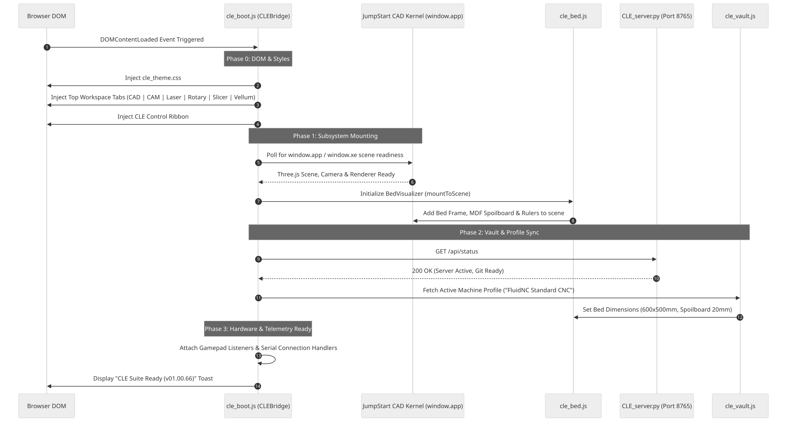


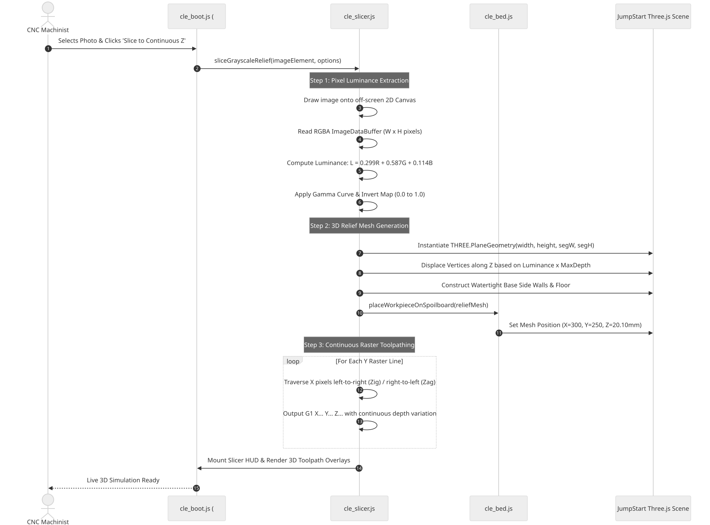

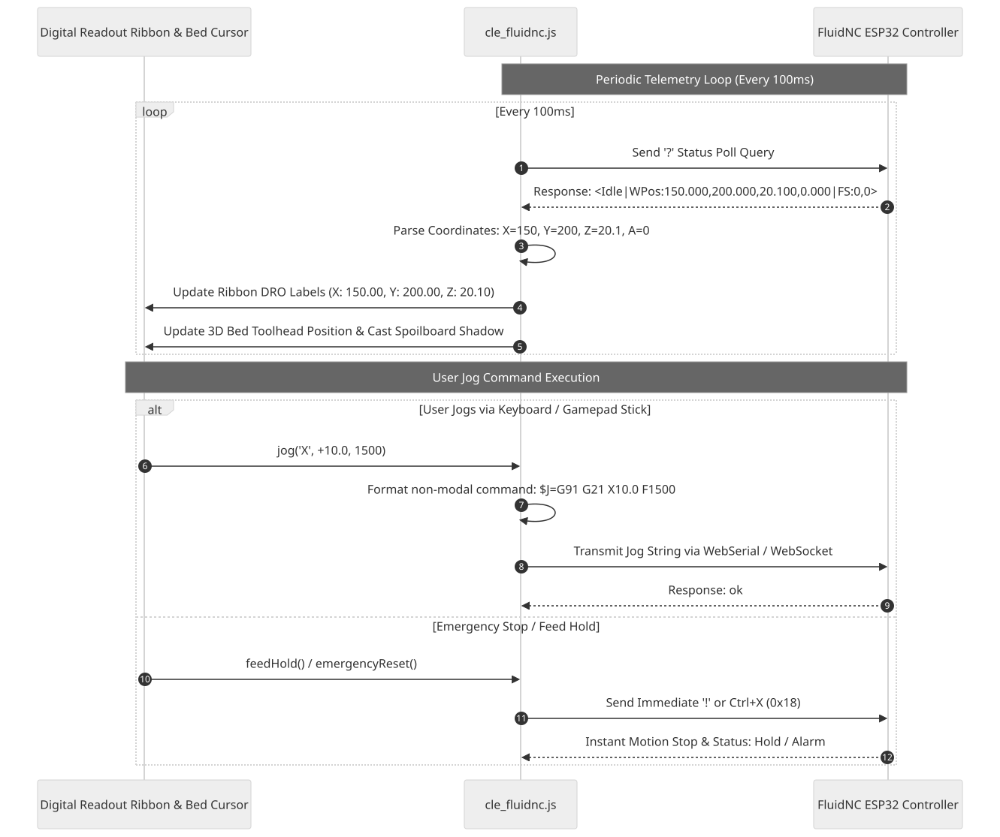


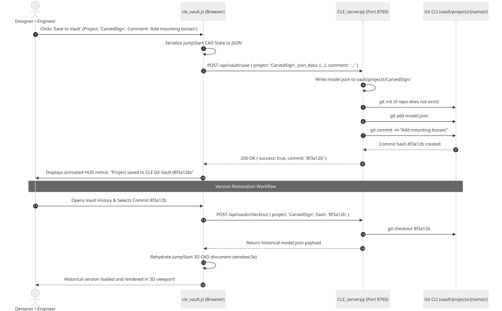
| Global Identifier | Providing Module | Description |
|---|---|---|
window.CLE | Dev/cle_tools/cle_boot.js | Master singleton instance of CLEBridge. Houses references to all sub-engines (CLE.bed, CLE.slicer, CLE.fluidnc, CLE.rotary, CLE.gamepad, CLE.vault, CLE.vellum, CLE.recovery). |
window.app / window.xe | JumpStart CAD Core (Dev/index.htm) | Master JumpStart application instance. Manages Three.js scene (app.scene), active camera (app.camera), renderer, B-Rep bodies, and command stack. |
window.Se | JumpStart CAD Core | CAD document model containing active sketches, parametric features, planes, and solid bodies. |
window.Ei | Vellum Core (Vellum/index.htm) | Vellum application instance managing 2D SVG canvas elements, layers, selection sets, and vector export pipelines. |
window.Vellum | Vellum Core | Vellum standalone API namespace for curve generation and laser kerf calculation. |
CLEBridge: The central controller class instantiated at window.CLE. Aggregates all subsystems and coordinates UI lifecycle.CLEBedVisualizer.mountToScene(): Binds the CNC table, MDF spoilboard, and millimeter graduation rulers into JumpStart's active Three.js scene hierarchy.CLEBedVisualizer.placeWorkpieceOnSpoilboard(mesh): Analyzes the bounding box of a 3D CAD mesh or relief mesh and translates its Z-origin so the bottom rests exactly at $Z = 20.10\,\text{mm}$ (spoilboard surface + safe clearance).CLESlicerEngine.sliceActiveModel(): Traverses the active solid body, intersects slicing planes along the Z-axis, generates contour boundaries, calculates infill paths, and compiles CNC/laser G-code.CLESlicerEngine.generateLaminatedSlabs(cadMesh): Partitions tall CAD models into horizontal $30\,\text{mm}$ slab layers with dowel pin registration holes for laminated acoustic horns.CLEFluidNCClient.jog(axis, distance, feedRate): Formats and sends non-modal GRBL jog commands ($J=G91 G21 ...) via USB Serial or WebSocket.CLEJobRecoveryEngine.recordExecutedLine(lineNumber, gcodeStr): Circular buffer tracking executed toolpath lines in browser local storage.CLEJobRecoveryEngine.resumeAfterCrash(): Reads crash line index, backs up 5 lines (-5 lookback), raises spindle to safe Z clearance, moves to XY restart point, spins up spindle, and resumes carving.CLEGamepadEngine.calculateJogRate(axisDeflection): Mathematical transfer function applying quadratic scaling $f(x) = \text{sign}(x) \cdot x^2 \cdot V_{\max}$ for smooth jog speed control.GitVaultEngine.ensure_repo(projectDir): Backend Python method that validates the presence of .git in a project vault directory, initializing an isolated Git repository if absent.CLEVellumBridge.handleExport(payload): Message handler parsing vector payloads exported from Vellum Vector Studio into JumpStart CAD geometry.-5 lines): Crash recovery strategy where resume execution starts 5 toolpath lines prior to the recorded crash point, ensuring smooth overlap without leaving uncarved gouges or ridges.